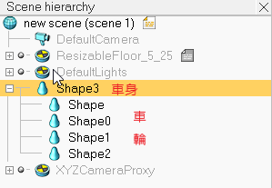
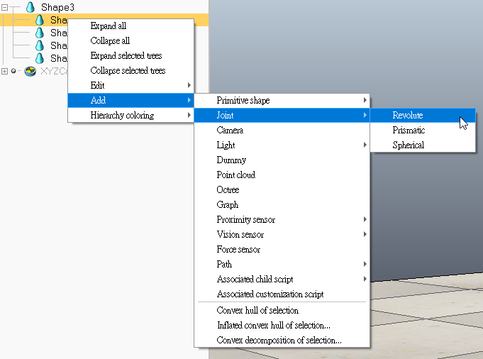
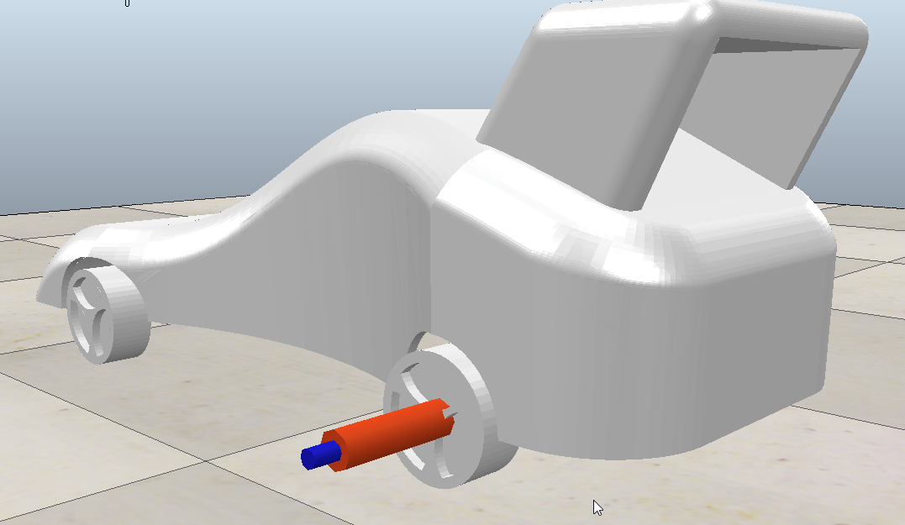
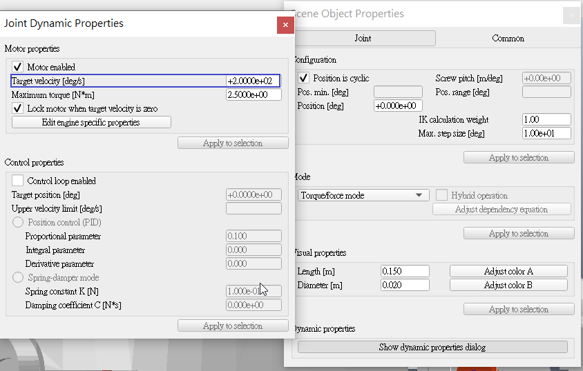
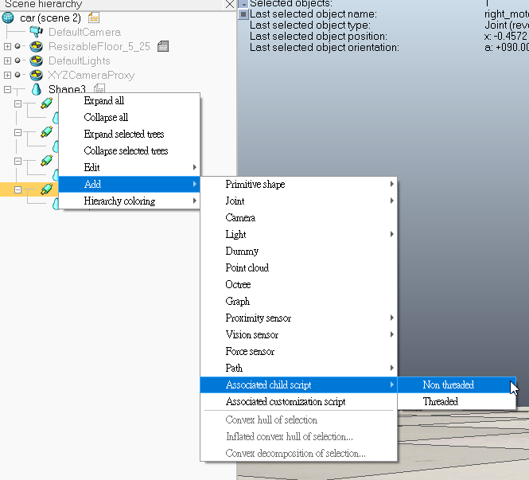
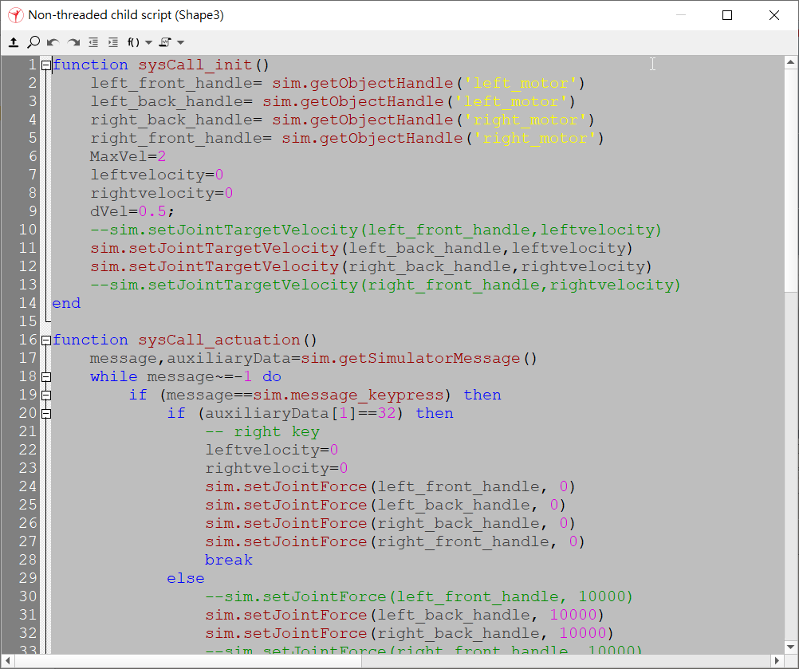

Collaboration翻譯 <<
Previous Next >> 問題
四輪機器人模擬
coppelia sim (V-rep)導入模型並模擬
模型由40723147繪製
1.開啟coppelia sim 點選 File >> Import >> Mesh... ，導入模型檔案(小組繪製模型為STL檔)
2.將導入的模型依照旗子母關係擺放

3.新增節點，右鍵點選車輪 >> Add >> Joint >> Revolute

4.將Joint移動至輪胎與輪軸銜接處(四顆輪胎都要做)

5.調整車子設定，在零件的圖示上 用左鍵快速點及兩下 >> 點選 show dynamic properties dialog >> 勾選 Body is respondable 和 Body is dynamic (車身和車輪)

6.調整Joint設定，在零件的圖示上 用左鍵快速點及兩下 >> 點選 show dynamic properties dialog >> 勾選 Motor enabled 並給定速度

7.調整後按下star simulation 進行模擬
對模型加入腳本並編寫程式進行控制
1.對車身零件點右鍵 點選Add >> Associated scrip >> Non threated

2.用左鍵快速點及兩下圖示
於開啟的視窗即可開始編寫程式

Remote API
用Remote API取得遠端模擬影像
Collaboration翻譯 <<
Previous Next >> 問題